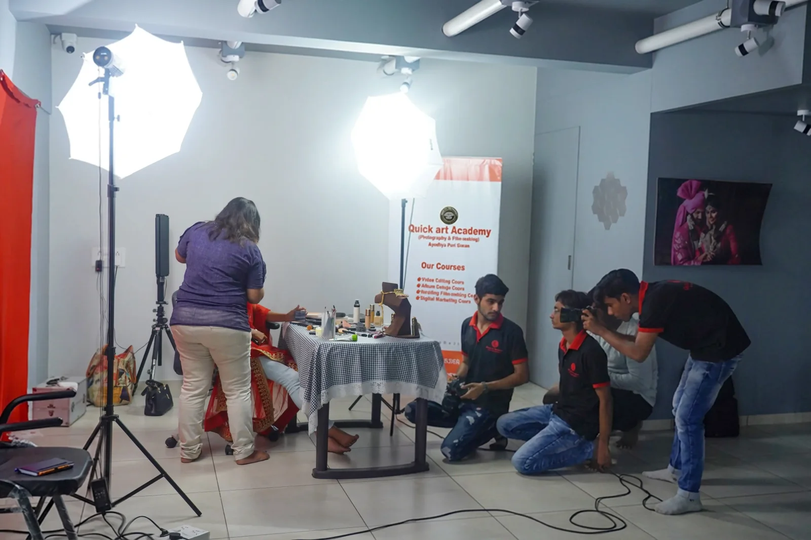

100% Practical Training
हर important topic को practical project के साथ समझाया जाता है।
Learn Professional Wedding Video Editing with EDIUS
अगर आप Wedding Video Editing सीखना चाहते हैं और शुरुआत कहाँ से करें समझ नहीं आ रहा, तो यह course आपके लिए है।

हर important topic को practical project के साथ समझाया जाता है।
Quick Art Photography Academy के साथ सीख चुके students की growing community.
अपनी speed और comfort के हिसाब से classes को दोबारा देखकर practice करें।
Real wedding footage और practice files के साथ editing सीखें।
इस Edius Wedding Video Editing Training में आप EDIUS software का complete use और Wedding Video Editing workflow step-by-step सीखेंगे।
शुरुआत basic editing से होगी और धीरे-धीरे आप Traditional Wedding Video, Wedding Highlights, Teasers, Songs, Titles, Color Correction, Slow Motion, Effects और Transitions पर काम करना सीखेंगे।
साथ ही आपको Readymade Projects को सही तरीके से use करना, अपना project manually create करना और final video को client-ready format में export करना भी practically सिखाया जाएगा।
Full-length wedding videos को professionally arrange, edit और deliver करना सीखें।
Wedding के best moments को select करके attractive highlights और short teasers बनाना सीखें।
Wedding songs को footage के साथ सही तरीके से sync करना और professional titles create करना सीखें।
Story, music, slow motion, transitions और effects की मदद से wedding footage को cinematic feel देना सीखें।
अगर आपने पहले EDIUS use नहीं किया है, तब भी आप इस course को शुरुआत से सीख सकते हैं।
हमारा तरीका simple है—पहले समझिए, फिर हमारे साथ करके देखिए और उसके बाद खुद project पर practice कीजिए।
इसी वजह से यह training beginners के साथ उन editors के लिए भी useful है जो पहले से Wedding Videos edit करते हैं लेकिन अपनी editing speed और workflow को improve करना चाहते हैं।
Quick Art Photography Academy का Edius Wedding Video Course आपको basic से advanced level तक Wedding Video Editing का पूरा practical workflow सिखाता है।
यहाँ सिर्फ EDIUS के tools नहीं बताए जाते। आपको real wedding footage के साथ Traditional Video Editing, Wedding Highlights, Song Editing, Titles, Color Correction और Automatic & Manual Project Creation practically सिखाया जाता है।
Start Learning ↗
Quick Art Photography Academy का Edius Course specially उन लोगों के लिए बनाया गया है जो Wedding Video Editing को सिर्फ hobby की तरह नहीं, बल्कि professional skill की तरह सीखना चाहते हैं।
अगर आपका अपना photography studio है, तो अपनी wedding video editing in-house करना सीख सकते हैं।
अगर आपने आज तक EDIUS नहीं चलाया है, तो भी basic से शुरुआत कर सकते हैं।
पहले से editing करते हैं तो अपने workflow, speed और project quality को upgrade कर सकते हैं।
Video Editing को एक professional creative skill के रूप में सीख सकते हैं।
Wedding Video Editing projects लेकर freelancing शुरू करने के लिए practical workflow सीख सकते हैं।
8 modules. Basic से advanced तक—footage import करने से client-ready delivery तक।
Talk to our team ↗
Hi, I’m Anil Sharma.
मैं कई वर्षों से Wedding Photography, Filmmaking और Video Editing industry में काम कर रहा हूँ।
Quick Art Photography Academy में मेरा focus सिर्फ यह बताना नहीं रहता कि EDIUS में कौन-सा button कहाँ है। मैं students को वह workflow सिखाने की कोशिश करता हूँ जो real wedding projects पर actually काम आता है।
आप मेरे साथ step-by-step सीखेंगे और फिर उसी workflow को अपने project पर practice करेंगे।
Founder — Quick Art Photography Academy
हमारा focus सिर्फ software के buttons और tools सिखाना नहीं है।
हम चाहते हैं कि जब आप course complete करें तो आपको यह समझ हो कि एक real wedding project आने के बाद footage को manage करने से लेकर final video client को देने तक पूरा काम कैसे किया जाता है।
यही वजह है कि हमारी Edius Wedding Video Editing Training practical projects और wedding-industry workflow पर ज्यादा focus करती है।
हर important topic को real project के साथ practically समझाया जाता है।
Practice के लिए wedding footage और project-based workflow मिलता है।
Learning के दौरान किसी topic या project में problem आने पर guidance मिलती है।
Course successfully complete करने के बाद Certificate of Completion दिया जाता है।
Video Editing सीखने का सबसे अच्छा तरीका है—खुद Edit करना।
इसीलिए हमारे edius video editing course में practical training को सबसे ज्यादा importance दी जाती है।
आप wedding footage पर काम करेंगे, mistakes करेंगे, उन्हें correct करना सीखेंगे और धीरे-धीरे अपना workflow develop करेंगे।
यही practice आपको सिर्फ EDIUS चलाने वाले व्यक्ति से एक confident Wedding Video Editor बनने में मदद करती है।

घर से step-by-step सीखें।
Classes को दोबारा देखकर अपनी speed से practice करें।
Training simple Hindi/Hinglish में समझाई जाती है।
Real-world wedding projects के साथ practice करें।
Course successfully complete करने के बाद certificate प्राप्त करें।
अपनी convenience के अनुसार course access करें।
Learning के दौरान doubts के लिए support प्राप्त करें।
बहुत सारे students software तो सीख लेते हैं, लेकिन जब उनके पास पूरा Wedding Project आता है तो समझ नहीं आता कि शुरुआत कहाँ से करें।
इसी gap को ध्यान में रखकर हमारा Edius Wedding Video Course बनाया गया है।
यहाँ हमारा focus है कि आपको software के साथ-साथ project planning, footage management, editing workflow, music selection, highlights, titles, color correction और final client delivery की समझ भी हो।
Theory से ज्यादा focus actual editing और practice पर रहता है।
Real wedding footage के साथ professional workflow समझें।
Training generic video editing की जगह Wedding Video Editing requirements को ध्यान में रखकर दी जाती है।
Editing सीखने के बाद अपने skills को client work और freelancing में कैसे use करें, इसकी basic guidance भी मिलती है।
Course complete करने के बाद आपके पास Wedding Video Editing का practical workflow होगा, जिसे आगे लगातार practice करके professional level तक develop किया जा सकता है।
आप Wedding Video Editor के रूप में काम कर सकते हैं, photography studios के लिए projects edit कर सकते हैं, freelance Wedding Editing projects ले सकते हैं या अपने photography business में editing service add कर सकते हैं।
अगर आपका पहले से studio है, तो Edius Wedding Video Editing Training आपके editing workflow और delivery speed को improve करने में भी मदद कर सकती है।
Quick Art Photography Academy का Edius Wedding Video Course उन learners के लिए है जो Hindi में simple और practical तरीके से Wedding Video Editing सीखना चाहते हैं।
इस edius video editing course में EDIUS basics से लेकर Traditional Wedding Editing, Highlights, Songs, Titles, Effects, Color Correction, Automatic Projects, Manual Project Creation और Final Client Delivery तक complete workflow cover किया जाता है।
हमारा goal सिर्फ course complete करवाना नहीं है। हमारा goal है कि आप जो सीखें, उसे अपने real wedding projects में confidently use कर सकें।
हाँ। अगर आपने पहले कभी EDIUS use नहीं किया है, तब भी आप शुरुआत कर सकते हैं। Training basics से step-by-step आगे बढ़ती है।
आप EDIUS basics, Traditional Wedding Editing, Wedding Highlights, Song Editing, Titles, Effects, Transitions, Color Correction, Automatic Projects, Manual Project Creation और Final Export Workflow सीखेंगे।
हाँ। Training में practical wedding footage और project-based workflow पर focus किया जाता है।
हाँ। Course को Hindi/Hinglish में simple तरीके से समझाया जाता है ताकि beginners भी आसानी से follow कर सकें।
Course successfully complete करने के बाद Certificate of Completion दिया जाता है।
हाँ। खासकर Wedding Photographers और Studio Owners के लिए यह useful है जो अपने studio में Wedding Video Editing workflow को बेहतर तरीके से manage करना चाहते हैं।
अगर आप Wedding Video Editing को professional तरीके से सीखना चाहते हैं, तो Quick Art Photography Academy के साथ शुरुआत कर सकते हैं।
1,800+ Students · Practical Training · Hindi Learning